🦄 DMorph for OctoWoW
Become anything. Ride anything. Wear anything. ✨
DMorph is a free morph addon for WoW 1.12 (OctoWoW), version 2.23.0. Turn into a dragon 🐉, ride a mechanical chicken 🐔, swap your race 🧝, light your blade on fire 🔥, make it snow in Orgrimmar ❄️, and dress up in any armour set in the game 🛡️, all from one slick purple window.
🔒 100% client-side and safe: morphs only change what you and other DMorph users see. Everyone else, and the server, sees your real character.
Unzip, drop the DmorphOcto folder into your AddOns, done. Full steps below 👇
🚀 Want MORE? The Ported Pack
From The Burning Crusade to Mists of Pandaria, right inside DMorph. Free and optional, and friends with the pack see your ported looks too 👯
Send benito9295 a message on Discord for the download links and help. How to install it: Ported Pack below 👇
🌟 What you get
- 🐲 16,000+ creatures13,000+ different models, every one in the game, with turning 3D previews, search, and filters for bosses 👑, rares 💎 and mounts
- 🐎 950 mountsAny of 950 mount models (3,143 with the pack), or any other model, as the look of your mount, from Ashes of Al'ar 🔥🦅 to a giant crab. Mount and dismount with your own keys
- 🧝 Every race and genderWith real skin colours, faces, hair styles, hair colours and beards. You keep your own faction, languages, flight paths and reputation
- 🗡️ 13,000+ items & 351 setsEvery weapon and armour piece, and whole sets in one click. Hover to try it on first
- ✨ Weapon glowsCrusader, Fiery, Icy and every other enchant glow in the game, on any weapon
- 👙 SlutmogEvery revealing piece in one list, plus Birthday suit 🎂 and Invisible slots
- ⛈️ Weather & time of dayRain, snow or a sandstorm 🌪️, dawn 🌅, noon ☀️, dusk 🌇 or midnight 🌙, in every zone
- 📏 Your sizeFrom a tiny 25% 🐭 to a towering 300% 🦖
- 👗 Wardrobe & favouritesSave whole outfits ⭐ and star your best finds, shared by all your characters
- 👯 Share with friendsOther DMorph users see your model, items, mount skin and size, and you see theirs
- 🚀 Optional ported packsThousands more creatures, mounts, armour and glows from The Burning Crusade to Mists of Pandaria
Your look stays through /reload, loading screens and logging in. 💾
📸 Screenshots
One window, ten tabs, and your character front and centre: the dressing room on the left always shows you as you'll look in the world, and every list has its own preview box that turns, zooms and moves, so you see everything before you click it. 👀

🐲 Models: become anything
16,000+ creatures to become (13,000+ different models, every one in the game), plus 8,157 more from later expansions with a ported pack. Search by name, sort A-Z or by ID, filter for bosses, rares or mounts, and watch each one turn in the preview before you commit. Grow or shrink yourself from 25% to 300% with the size slider. Here: Supremus, at 125%. 😈

🐎 Mounts: ride anything
Pick any model as the skin for all your mounts, or for just one of them. It goes on the moment you mount and comes off when you get down, and you still use your own mount keys. 950 mount models to choose from, and 3,143 with the pack (2,193 more), from Ashes of Al'ar to the Venomous Gladiator's Goredrake turning in the preview. 🐉

🧝 Races: any race, still you
Every race and gender, wearing your own face, skin and hair. The arrows step through real skin colours, faces, hair styles, hair colours and facial hair, and the dice 🎲 rolls a whole new look. Your faction, languages, flight paths and reputation stay your own, so a Horde character can be a dwarf and still talk to Orgrimmar.

✨ Glows: every enchant, any weapon
Every weapon glow in the game for main hand, off hand and ranged. With the pack, 33 more from The Burning Crusade to Mists of Pandaria: Sunfire, Mongoose, Berserking, Crackling Lightning ⚡, Jade Spirit and more. Hover one and the preview puts it on your weapon.

🗡️ Items: every weapon and armour piece
13,000+ weapons and armour pieces, and 48,889 more with the pack. Filter by slot, type, quality and source, hover to try it on, click to wear it. Invisible 👻 hides a slot completely. Here: the Scythe of Elune, on a dwarf.
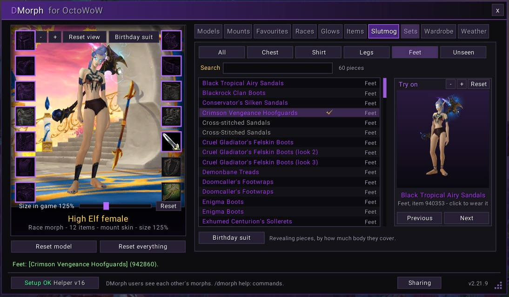
👙 Slutmog: show some skin
Every revealing piece in one list: chests, shirts, legs and feet, measured from how much body each one actually covers, not guessed from its name. Chainkinis, halter tops, loincloths, tropical skirts 🌺 and airy sandals, plus OctoWoW's invisible Unseen Fashion pieces. Hit Birthday suit 🎂 and build your look up from bare skin.

🛡️ Sets: a whole outfit in one click
351 sets, and 1,266 with the pack. One click wears every piece, and the slots a set doesn't cover go bare, so your own gear never peeks through. Hover a set to see every piece on your character first.
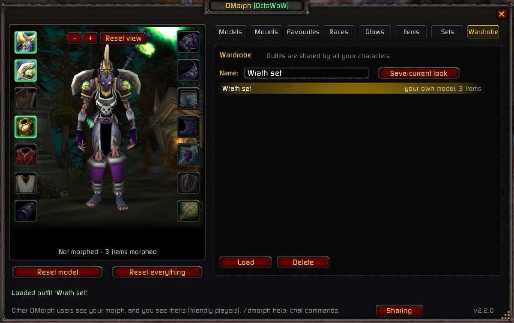
👗 Wardrobe: save your looks
Save your whole look as an outfit: model, items, glows, mount skin and size. Outfits are shared by all your characters and come back in one click.
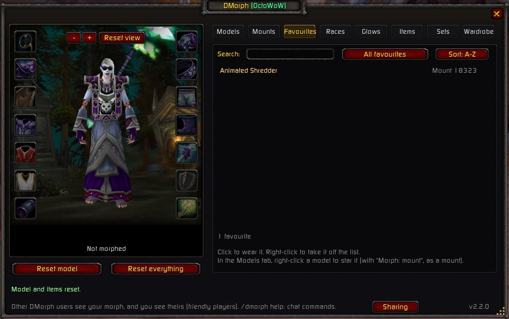
⭐ Favourites: your best finds at hand
Right-click any model or mount skin to star it. Your favourites follow you to every character.
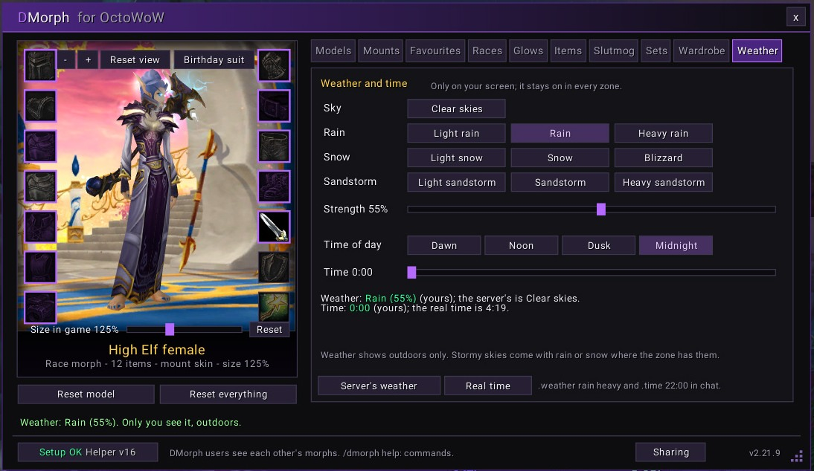
⛈️ Weather: your sky, your time
Clear skies, rain 🌧️, snow ❄️ or a sandstorm 🌪️, from light to heavy, and any time of day: dawn, noon, dusk or midnight. It stays on in every zone, and only you see it.
🌍 Out in the world
Other DMorph users see your model, items, mount skin and size, and you see theirs. 👯

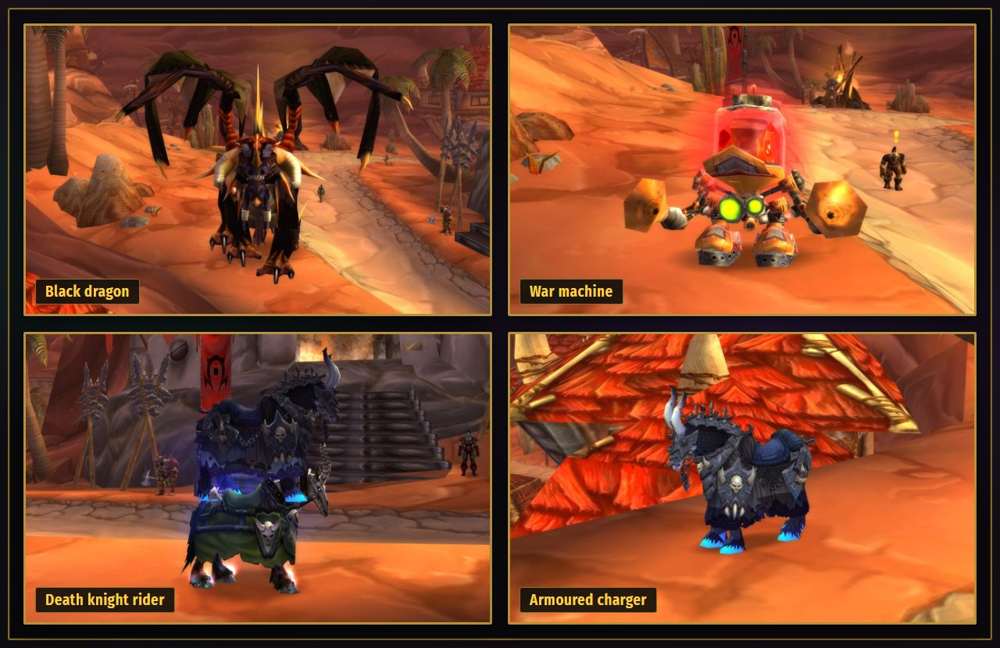
With a ported pack (optional, see below) 🚀:
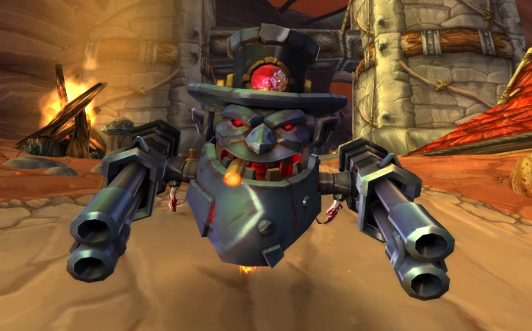
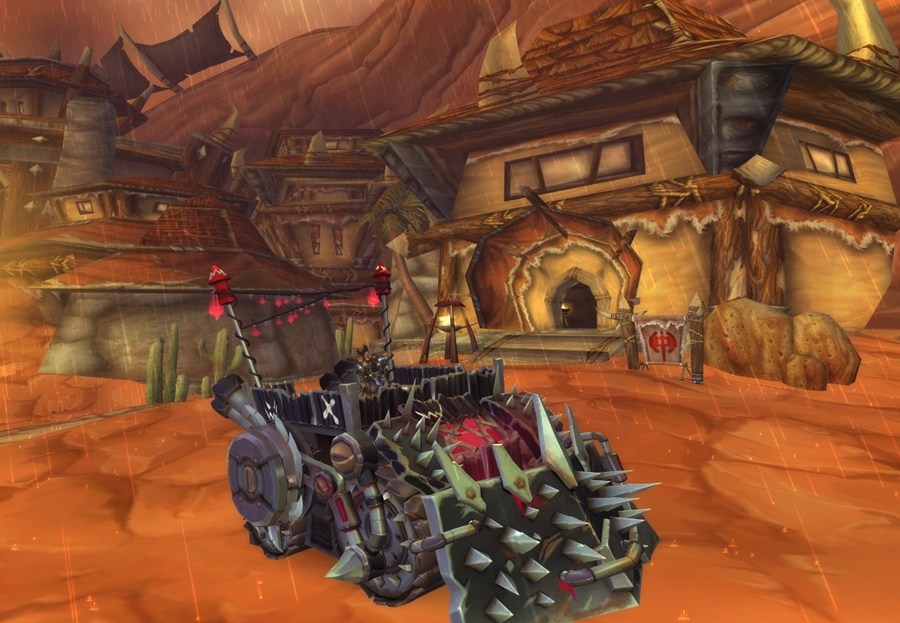
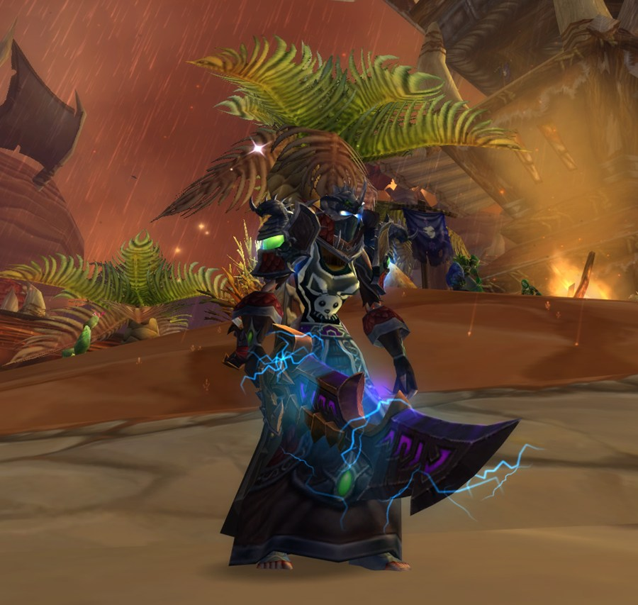
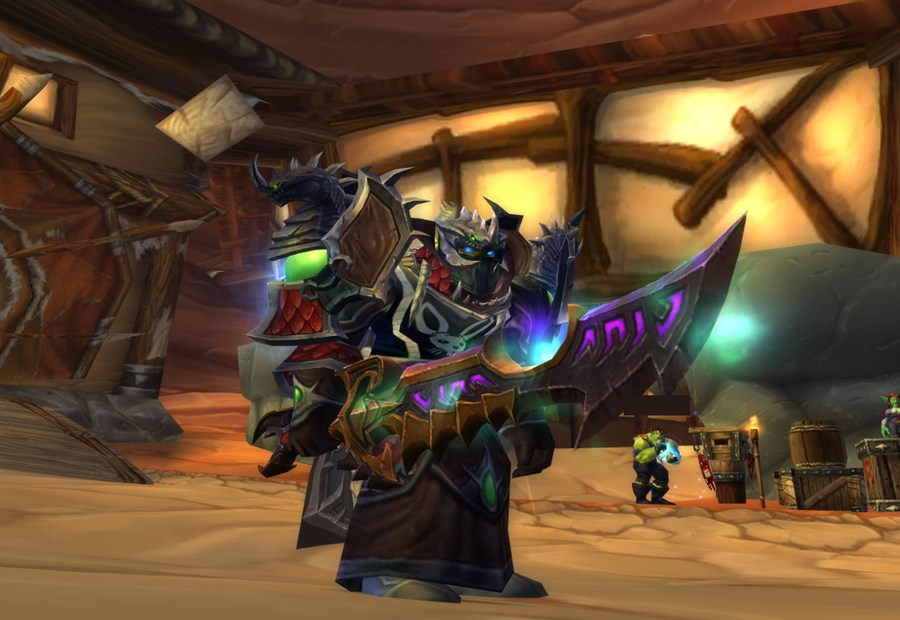
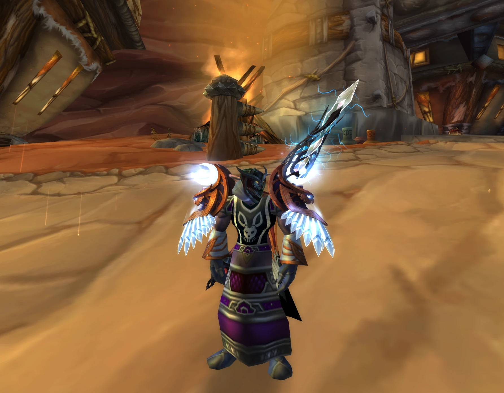
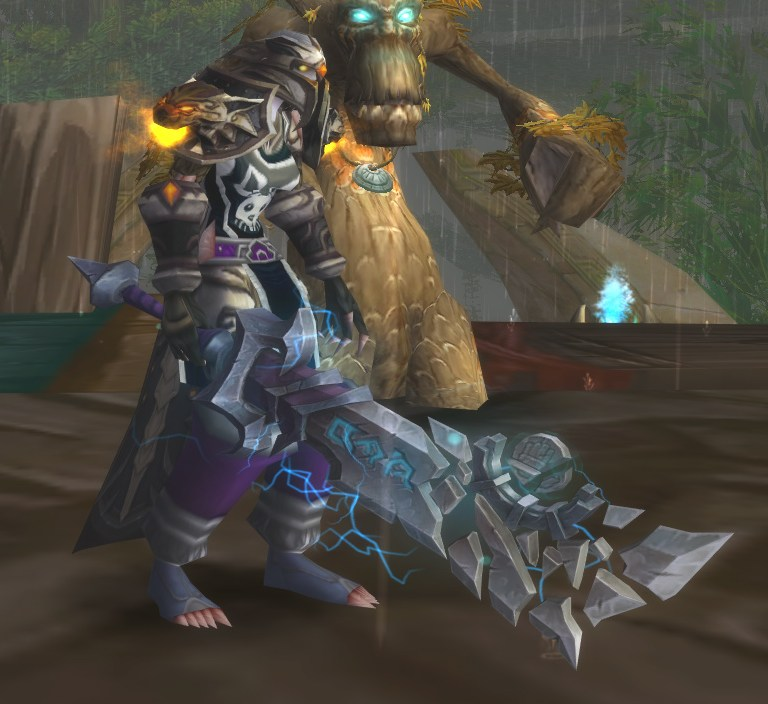
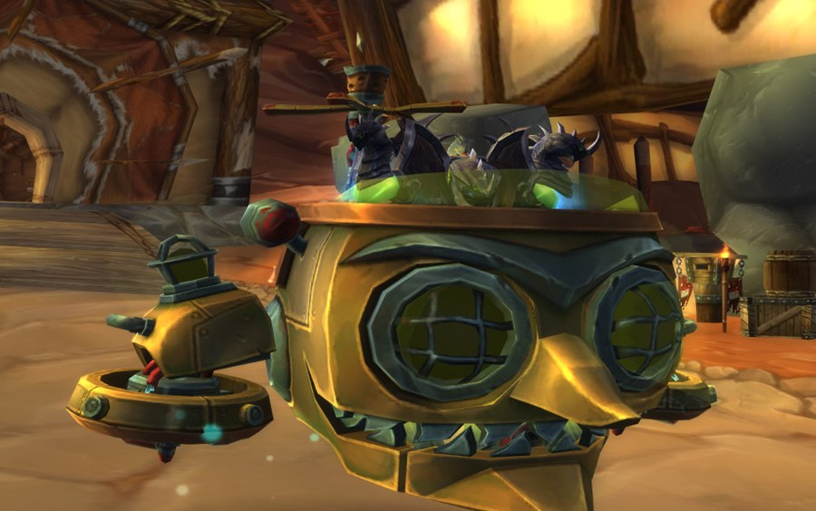
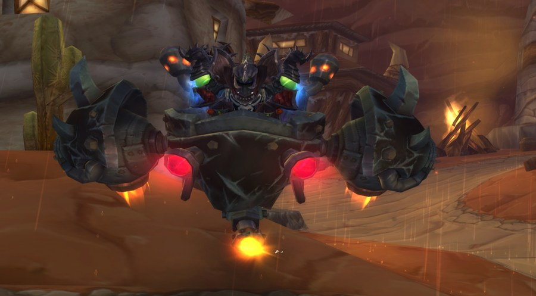
🛠️ How to install
It takes about two minutes. ⏱️
Turn on VanillaHelpers ✅
Open OctoLauncher and, in its list of mods, tick vanillaHelpers. DMorph needs it. Without it, nothing can morph.
Put DMorph in your AddOns folder 📁
Download DmorphOcto.zip, right-click it and choose Extract All, then Extract. Move the DmorphOcto folder inside it into your game's AddOns folder, so it ends up like this:
OctoWoW\Interface\AddOns\DmorphOcto\DmorphOcto.tocUsed GitHub's green Code > Download ZIP button instead? Then the folder is called DmorphOcto-main: rename it to DmorphOcto.
Run the installer 🪄
For glows, real skin, face and hair, size, weather and time of day. Close the game completely, open
OctoWoW\Interface\AddOns\DmorphOctoand double-click Install DmorphHelper.bat. "Windows protected your PC": click More info, then Run anyway. A black window ends with "DmorphHelper is installed". You can skip this step: everything else still works.Play! 🎮
Start the game from OctoLauncher (not WoW.exe). Click the polymorph button by the minimap 🐑, or type
/dmorph. The Setup button at the bottom left:- 🟢 Green "Setup OK": you're ready (it shows the DmorphHelper version, for example "Helper v16").
- 🟡 Yellow "Old helper": close the game and run Install DmorphHelper.bat again.
- 🔴 Red "Setup: fix me": click it. It tells you what isn't working and how to fix it.
Updating, fixes for common problems, every tab and the chat commands: the full guide on GitHub.
🚀 Ported Pack (optional)
Want a LOT more models? DMorph has no later-expansion models, and doesn't need them. The Ported Pack adds them: 8,157 creature looks (2,193 of them mounts), 12,798 weapons and shields, 36,091 armour looks, 915 armour sets and 33 weapon glows, converted from a newer WoW install. They show in DMorph's lists under Ported (later expansions). These are Blizzard's files, so the pack isn't on GitHub: 💬 DM benito9295 on Discord for the download links.
✅ Before you start: DMorph 2.19.0 or newer installed (see above), about 50 GB of free space (the download is about 15 GB, most of it can be deleted afterwards), and the game closed.
Download BOTH parts
Get Part 1 and Part 2 from the links benito9295 sends you on Discord. Pick one site, MEGA or File Insane: the files are the same.
Unzip both parts into ONE folder
Make a folder, for example
C:\DMorphPack. Right-click Part 1 → Extract All, change the path toC:\DMorphPack→ Extract. Do the same with Part 2, into the same folder.⚠️ Windows adds the zip's name to the path: delete that part, so both parts land in the same folder. Don't unzip into the game folder. The folder then has Install Ported.bat, manifest.txt, Ported.lua and 17 patch files.
Install
Double-click Install Ported.bat in that folder ("Windows protected your PC": More info, then Run anyway). It finds your game, checks every file (a few minutes), never replaces OctoWoW's own patches, and installs DmorphHelper. Wait for "The ported models are installed".
Play! 🎮
Start the game from OctoLauncher, type
/dmorphand pick Ported (later expansions).
🧹 Afterwards you can delete the two zips and the patch-?.mpq files in your pack folder (the game has its own copy). Keep Remove Ported.bat and install_ported.ps1: double-click Remove Ported.bat to take the pack out again. DMorph users with the same pack see each other's ported models, mounts and items; everyone else sees your normal look.